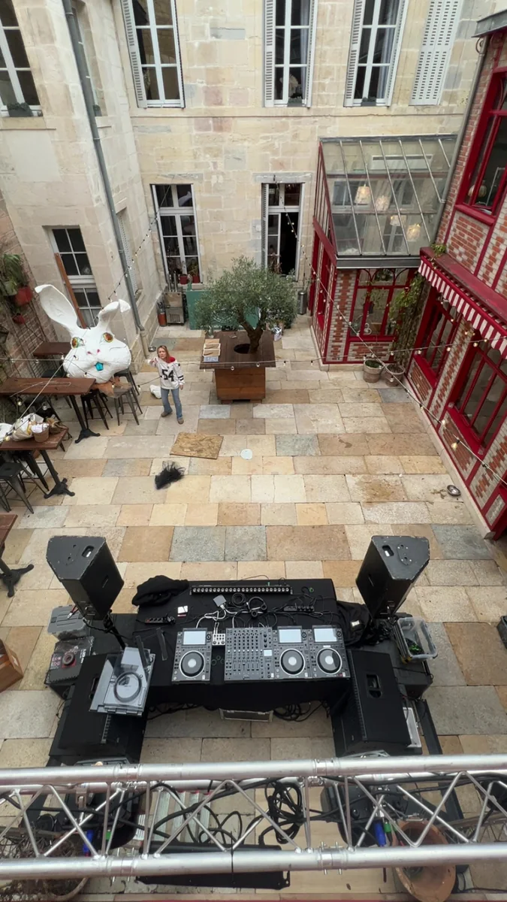
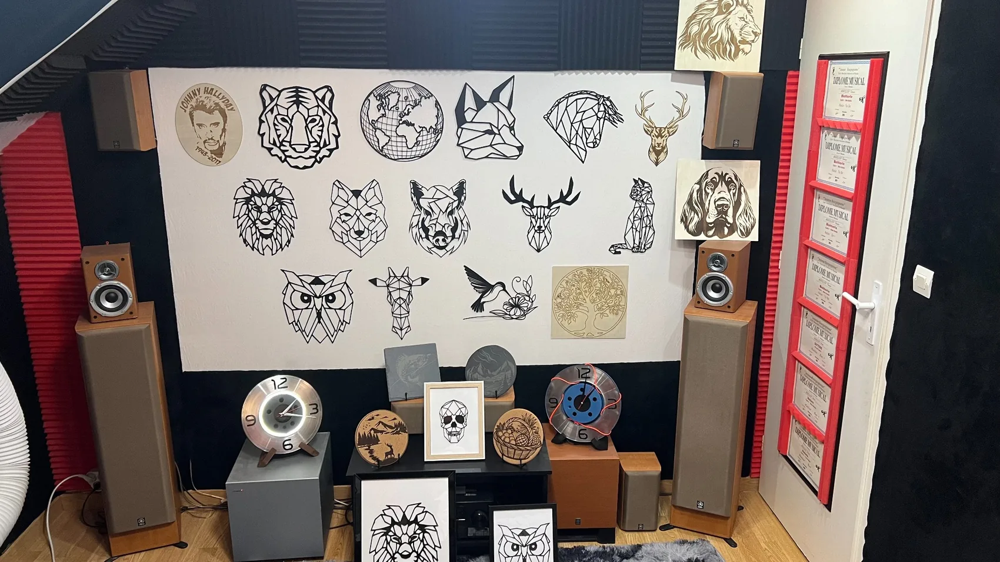
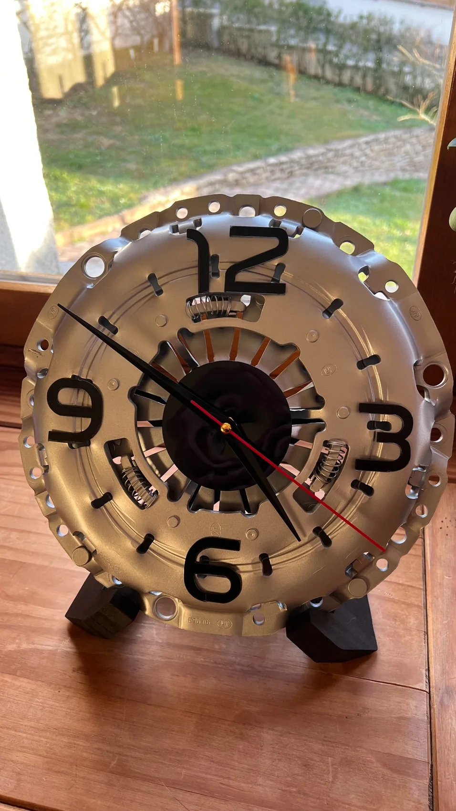

01 · Pulse
Location & prestations son/lumière
Sonorisation, éclairage, installation technique et accompagnement pour soirées privées, associations, événements et configurations DJ.
Explorer PulsePulse & Process
Pulse & Process réunit trois savoir-faire séparés : l’événementiel avec Pulse, l’amélioration terrain avec Process, et les créations sur mesure avec l’atelier Artisanat.



Une marque, trois entrées
Le site est volontairement séparé pour éviter les mélanges : événementiel, optimisation terrain et créations ne répondent pas aux mêmes attentes.

Sonorisation, éclairage, installation technique et accompagnement pour soirées privées, associations, événements et configurations DJ.
Explorer Pulse
Analyse de temps, changements de série, aménagements de postes, flux de déplacement, tableaux Excel et outils simples pour mieux travailler.
Explorer Process
Cadres, horloges mécaniques, gravure laser, impression 3D, sablage et fabrication de solutions quand la pièce ou l’objet n’existe pas.
Explorer l’artisanatPositionnement
Chaque pôle répond à un besoin précis : équiper un événement, améliorer un fonctionnement terrain, ou créer un objet / une pièce adaptée. L’objectif reste le même : comprendre le besoin, proposer une solution claire et livrer un résultat propre.
La force de Pulse & Process, c’est le mélange entre vision technique, sens du détail et capacité à passer rapidement du problème réel à une solution exploitable.
Preuves terrain
Contact